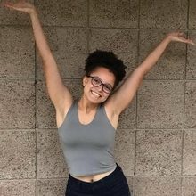
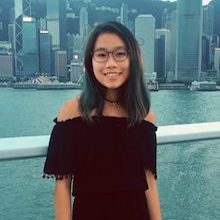
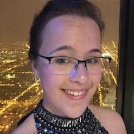
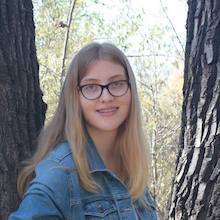
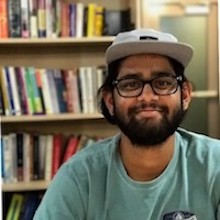
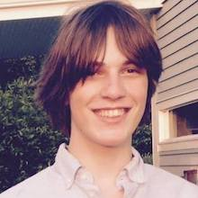
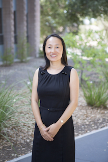

Our Team
Board Directors

Rakia Segev
Communications Director
Computer Science Major
Class of 2021

Mary Celestin
Community Engagement Director
Engineering Major
Class of 2021

Daphne Poon
Public Relations Director
Engineering Major
Class of 2021

Max Maleno
Treasurer
Engineering Major
Class of 2020
Executive Committee

Ellie Naudzius
President
Engineering Major
Class of 2020

Elizabeth Hedenberg
Vice President
Engineering Major
Class of 2021

Siddharth Chandra
Vice President
Engineering Major
Class of 2020

Harry Fetsch
Vice President
Physics Major
Class of 2020
Faculty Advisor

Professor Qimin Yang
Engineering Department at Harvey Mudd CollegeProfessor Yang is a Professor of Engineering at Harvey Mudd College. She recieved her BS degree in Electrical and Electronics Engineering at Beijing University of Post and Telecommunications and her PhD from Princeton University in Electrical Engineering. She was the associate director of the Harvey Mudd College Clinic Program for several years and specialized in fiber optic communications. She has past experience with projects that aim to empower communities abroad and is a truly inspiring and motivating individual who will help grow the Harvey Mudd College Chapter of EWB.